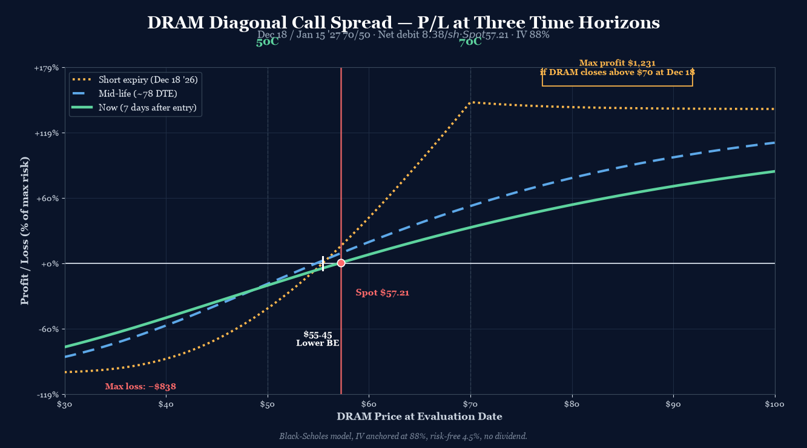
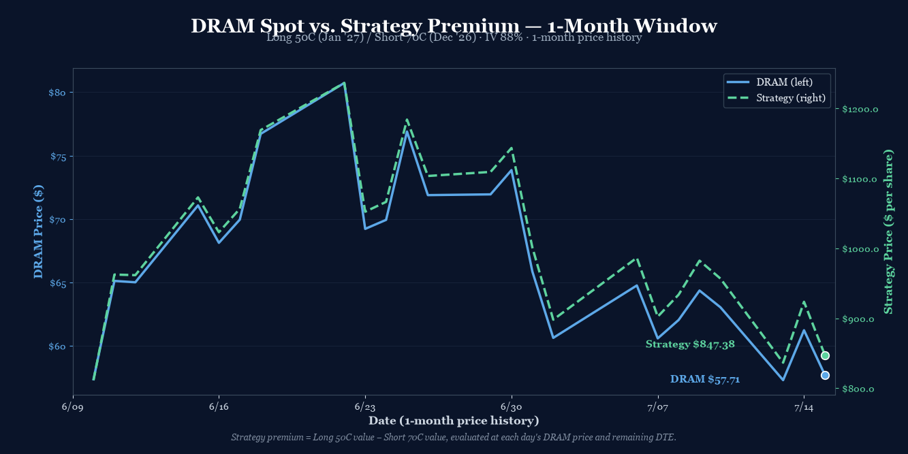

P/L Curve — Three Time Horizons

Max Profit
$1,231.44
above $70 at Dec 18 expiry
Max Loss
$837.50
defined risk = net debit
Net Debit
$8.38
1 diagonal call spread · $837.50 total
Spot / IV
$57.21
DRAM @ entry · IV 88%
Position Payoff at Three Time Horizons
The chart above shows the position's P/L as a function of DRAM's price at three evaluation dates: now (7 days after entry, ~149 DTE on short), an intermediate horizon at ~78 DTE on short (mid-September), and at short expiration on December 18, 2026. Three colored curves — green for now (full theta exposure), blue dashed for mid-life (early short-leg decay), gold dotted for short-expiration (intrinsic-only, long leg still has 28 DTE).
Read the chart:
- Spot $57.21 sits between the lower breakeven ($55.45) and the long strike ($50). The position is currently slightly positive because the long 50C retains meaningful time value at 184 DTE — the 28 DTE advantage over the short leg means front-month theta harvest is funding the back-month carry.
- Max profit plateau $1,231.44 opens at $70 and runs to infinity. Unlike a vertical spread, a diagonal has no upper cap — but the slope past $70 is shallower than a naked long call because the short 70C caps the upmove at $70 intrinsic minus the residual long time value at short expiration.
- Wings cut loss at the debit. If DRAM drops to $30 or rallies to $100, the position is bounded between -$837.50 and +$1,231 — defined risk with positive convexity past $70.
- The three curves diverge as DTE decays. The now-curve (green solid) and the mid-curve (blue dashed) sit roughly parallel above $50, with the mid-curve pulling away from the now-curve as the short 70C loses time premium faster than the long 50C. The expiration curve (gold dotted) kinks sharply at $50 (long strike activates) and again at $70 (short strike inverts to liability) before flattening into the plateau.
Key levels (drawn on the chart):
- Lower breakeven $55.45 — DRAM needs to drop only ~3% to wipe out the debit. Tight breakeven is the diagonal's signature: the wide strike spread collapses the lower breakeven far below the long strike.
- Spot $57.21 — current underlying, slightly above the lower breakeven, inside the long-wing intrinsic zone.
- Long strike 50C — the position starts gaining intrinsic per dollar once DRAM crosses $50; this is where the green curve turns up.
- Short strike 70C — the position stops gaining at intrinsic-only once DRAM crosses $70; this is where the gold curve plateaus.
- Max profit $1,231.44 — any DRAM close above $70 at December 18 expiration.
- Max loss -$837.50 — any DRAM close below ~$46 at December 18 (or any DRAM close below $50 if the long leg has been eroded by vol crush).
How the Trade Has Moved Against the Underlying
The chart below compares DRAM's spot price (left axis) to the strategy's premium (right axis) over the last month of trading. The two lines track closely — when DRAM rallies, the strategy premium expands; when DRAM sells off, the strategy compresses. The 1-month window captures a meaningful down-leg in DRAM from ~$80 to $57.21, with the strategy premium declining from ~$1,236/contract to ~$847/contract.

The wider observation: DRAM has now corrected -28% from its June peak ($80 → $57.21). This diagonal is a "buy the dip with theta help" structure. The short 70C is funding most of the long 50C carry; if DRAM reclaims $70 by mid-November, the short leg expires worthless and the long leg collects full intrinsic plus remaining time value. If DRAM stays range-bound or drifts down slowly, the theta differential between the two legs slowly closes the debit.
The risk is a vol crush on the long leg. At 88% IV, the long 50C carries significant extrinsic value. If DRAM mean-reverts and IV collapses to 60% (a normal idle level for memory names between cycles), the long leg decays by roughly half even if DRAM stays at $57. The short leg also decays, but proportionally less. Net effect: the debit holds but doesn't grow meaningfully until DRAM moves.
Greeks Snapshot (Black-Scholes, IV=88%, r=4.5%)
Greeks are computed at the entry spot ($57.21), 184 DTE on the long leg / 156 DTE on the short leg, IV surface anchored at 88%, risk-free rate 4.5%, no dividend yield. Numbers below are per-contract (×100 shares).
| Greek | Per-contract value | Interpretation |
|---|---|---|
| Delta (Δ) | +22.6 | Net long delta. Bullish. Each $1 DRAM move = +$22.6 P/L. |
| Gamma (Γ) | -0.26 | Slightly short gamma. Acceleration works against the position above $70. |
| Theta (Θ) | +$0.85/day | Net positive theta. Position earns time decay daily. |
| Vega (ν) | -$1.10 per 1% IV | Slightly short vega. Vol crush hurts the long leg more than it helps the short leg. |
| Rho (ρ) | +$3.73 per 1% rate | Modest rate sensitivity (long LEAP dominates). |
Per-leg breakdown (Black-Scholes, DRAM $57.21, IV 88%, r 4.5%):
| Strike / Expiry | Sign | Price | Delta | Gamma | Theta | Vega | Rho |
|---|---|---|---|---|---|---|---|
| 50C Jan 15 '27 (LEAP) | +1 | $17.43 | +0.7137 | +0.0095 | -0.0359 | +0.1382 | +0.1173 |
| 70C Dec 18 '26 (front) | -1 | $9.05 | -0.4882 | -0.0121 | +0.0444 | -0.1491 | -0.0800 |
| Total | $8.38 | +0.2255 | -0.0026 | +0.0085 | -0.0109 | +0.0373 |
The position's greek profile is long delta, short gamma, long theta, short vega — a textbook bullish-but-vol-cautious stance. The +0.85/day theta covers a $0.85 daily decay on the debit, while the -1.10 vega means IV crush of 10% would cost ~$11 of position value (small relative to the $837.50 debit).
Why This Structure
A diagonal call spread with long 50C Jan '27 (back month, lower strike, longer-dated) and short 70C Dec 18 (front month, higher strike, shorter-dated) is a theta-forward debit structure that expresses a bullish-but-not-violent view on DRAM with a defined-risk cap. The 20-point strike spread more than offsets the 28-day extra time value on the back month, producing a net debit that's roughly 70% the cost of a naked long 50C LEAP.
The structure is built off three sources of edge:
- Strike spread economics. Long 50C pays $17.425; short 70C collects $9.05. Net debit $8.375. The $20 strike spread contributes ~$8 of intrinsic "lift" to the position (long 50C is $7.21 ITM at $57.21, capturing intrinsic that the short 70C doesn't yet have). The short leg's intrinsic will only activate if DRAM crosses $70.
- Time-value arbitrage. Front-month theta (short 70C at 156 DTE decays at ~$0.044/day) is harvesting faster than back-month theta (long 50C at 184 DTE decays at ~$0.036/day). Net daily theta = +$0.85/contract/day, or +$0.0085. Over 100 days, that's ~$0.85/day × 100 = ~$85 harvested from time alone — recovering 10% of the debit even if DRAM doesn't move.
- Pullback entry. DRAM sold off to $57.21 today, down 6.56% from yesterday's close. The 50C LEAP at $17.43 is meaningfully cheaper than it would have been at the June $80 peak (~$25+ implied). Buying the long leg into a -28% drawdown gives better convexity.
The 156 DTE short expiration (Dec 18) is the natural management horizon. If DRAM reclaims $70 by then, the short leg expires worthless and the position becomes equivalent to a long 50C LEAP with $1,231 of locked-in profit. If DRAM stays below $70, the short leg is ITM at expiration — net assignment of $70 minus residual long intrinsic, capping the upside but still profitable above $55.45.
Thesis
Why DRAM, why now:
- Memory cycle setup. DRAM (memory chips, Micron/SK Hynix/Samsung proxy) is structurally levered to AI-driven memory demand. HBM supply is constrained; DDR5 transition is mid-cycle; spot prices have firmed off the 2024 lows.
- Pullback entry. DRAM is -28% from its June peak. Today's -6.56% one-day selloff looks like a memory-cycle dip-buying opportunity, not a structural break. The HBM3E ramp at Micron and the SK Hynix HBM4 roadmap remain intact.
- IV surface is rich. At 88% IV, the long 50C LEAP is pricing in significant forward volatility. If DRAM mean-reverts and vol collapses to 60%, the long leg loses extrinsic value — but the structure's short 70C also compresses, leaving the debit roughly intact. The position is vol-neutral on net (vega -$1.10/contract).
Why a diagonal over alternatives:
- Over a naked long 50C LEAP: Saves $9.05 ($905/contract) by selling the 70C front-month against it. That's a 52% reduction in debit cost for a structure that has a defined risk cap (max loss = debit, vs. naked long = lose all premium paid).
- Over a vertical 50/70 call spread (same expiry): Captures the calendar theta differential. A same-expiry 50/70 spread costs ~$5.50 and has a max profit of $20 - $5.50 = $14.50 at short expiration. The diagonal costs $8.38 but caps out at $20 - $8.38 + residual TV = ~$11.62 at short expiration — similar reward/risk, but the diagonal wins if DRAM stays range-bound for months (theta harvest) while the vertical doesn't.
- Over a calendar (same strike, different expiry): A 50C Dec/Jan calendar would be more pure theta, but it has unlimited downside risk past $50 (the front-month goes ITM with no back-month protection). The diagonal's $20 strike spread provides a hard floor on the long-leg intrinsic contribution, making the structure defined-risk.
- Over a debit put spread: Expressing a bullish view with calls keeps the long-leg convexity past $70. A put spread caps out at the short strike — diagonal lets you ride a rally.
Why not a long 50C + short 60C "tight" diagonal:
- A 50/60 diagonal would have a wider profit plateau past $60 but only $10 of strike-spread width. The lower breakeven would be ~$58 (much closer to spot), making the position more vulnerable to a continued selloff. The 50/70 structure gives a -3% lower breakeven cushion, which fits the "buy the dip" entry better.
Risk
| Risk | Magnitude | Mitigation |
|---|---|---|
| DRAM below $50 + debit at short expiry | Full loss of debit ($837.50) | LEAP long 50C retains value even on a -40% move (still $20 intrinsic + small TV). Tight stop at DRAM $48. |
| DRAM below $46 at short expiry | Max loss $837.50 capped | Defined risk by structure. Stop loss: 2× debit ($1,675) if DRAM breaks $48 and IV stays > 80%. |
| Vol crush on long 50C | Loss of extrinsic value over time | Net vega -$1.10/contract — small relative to debit. Theta on short 70C offsets ~70% of long-leg decay. |
| DRAM stays at $55–$58 for 5 months | Slow bleed; theta on short exhausted | Acceptable. Theta harvest in months 1–3; flat zone by month 4. Close if DRAM stalls below $58 for 90+ days. |
| Early assignment on short 70C | Possible if DRAM dividend declared or ex-date near | Avoid the trade in the ex-div window. DRAM doesn't pay dividends (ETP), but monitor for any corporate-action announcements. |
| Underlying gaps above $70 then fades | Short leg assigned, long leg residual | Profit still realized at short expiration above $70 (cap at $70 intrinsic + long residual TV). Management: roll short leg if DRAM spikes to $75+. |
Intraday Setup (entry)
DRAM opened at $57.21 on July 15 with implied volatility at 88% — elevated for a memory name that typically runs 70–95% IV around memory-cycle inflection points. The IV rank was in the upper half of its 12-month range.
The setup had been on the watchlist since the previous trade log (2026-07-13 DRAM Long Call Condor) — same underlying, same memory-cycle thesis, but a different structure to express a more aggressive bullish view with lower net debit. Today's -6.56% one-day selloff, taking DRAM from $61.23 to $57.21, put the 50C LEAP at $17.43 — meaningfully below its $25+ June peak. The pullback offered better entry on the long leg than waiting for a full reversal.
Two separate legs, filled as limit orders mid-day. The long 50C Jan '27 at $17.425 and the short 70C Dec 18 at $9.05 established the diagonal. Net debit of $8.375 = $837.50/contract — defined risk, theta-positive exposure with built-in lower-breakeven cushion.
The position was entered as a single-unit trade (1 diagonal, 2 legs), sized within the playbook's 0.25% NLV per-trade cap.
Management Plan
- Open through month 1 (Aug 2026): Do nothing. Theta on the short 70C is positive; the long 50C LEAP is holding time value. Position is "in the zone" — let it work.
- Month 1–2 (Aug–Sep 2026): Begin watching DRAM's path. If DRAM reclaims $60, the position is comfortably profitable and the short 70C starts losing value faster than the long 50C (theta accelerates on the short).
- Month 2–3 (Sep–Oct 2026): If DRAM is in the $60–$68 range, the position is approaching max profit. Begin taking partial profits (50% of max = ~$615) if DRAM trades above $68 for 5+ consecutive days.
- Month 3–5 (Oct–Dec 2026): Take 50% of max profit OR close 7 days before short expiration (Dec 11) if DRAM is below $65. Never let the short leg expire ITM without an exit plan.
- Stop loss: 2× debit ($1,675) OR DRAM breaks $48 support. Closing early at a loss is preferable to letting the long leg erode further on continued weakness.
Status
| Date | DRAM Price | Position Value | P&L | Notes |
|---|---|---|---|---|
| 2026-07-15 (entry) | $57.21 | $837.50 debit | — | Opened. IV 88%. Long 50C Jan '27 + short 70C Dec 18. |
Position is just opened. Theta bleed is minimal at 156/184 DTE — the short leg has not yet accumulated meaningful premium decay. DRAM is at the lower breakeven cushion zone, slightly above $55.45. No management action required at this stage.
Watch for: DRAM breaking decisively above $68 (start taking partial profit on the short 70C) or below $48 (stop loss triggered). A sustained move below $50 would begin testing the long 50C's time value. A move above $70 would convert the position into near-max-profit territory with the short leg approaching assignment risk.
Lessons
What worked: Expressing a memory-cycle bullish view with a diagonal rather than a naked long LEAP kept the net debit meaningfully lower ($837.50 vs ~$1,743 for a naked 50C LEAP) while preserving defined-risk characteristics. Selling the front-month 70C against the back-month 50C generated immediate theta carry (+$0.85/day) and widened the strike spread enough to push the lower breakeven down to $55.45 — a -3% cushion from the entry spot.
What I'd watch: The structure's net short vega (-$1.10/contract) is small but real. If IV collapses from 88% to 50% over the next 6 months, the long leg loses ~$14 of extrinsic value, partially offset by ~$10 of short-leg compression. Net debit drift: roughly -$4 to -$5. Not catastrophic, but worth monitoring against the theta harvest.
Calendar mechanics: The diagonal's edge comes from the time-value differential between the two legs. As the short 70C approaches expiration, its theta accelerates. By month 5 (Oct–Nov), the short leg will be decaying at 3–5x the long leg's rate, harvesting meaningful theta into the debit. This is the "diagonal calendar effect" — it works best when the short leg has 60–90 DTE left, not 150+ DTE as it does today. Early patience is required.
For the playbook: The next iteration should explore rolling the short leg if DRAM spikes past $75 in months 1–2 — closing the short 70C for $5+ profit and reopening a new short leg at a higher strike (75C or 80C) to recapture theta. This "rolling diagonal" pattern lets you ride a sustained rally past $70 while continuing to harvest front-month theta. Not relevant for this entry, but worth testing on a future setup.
Vol surface behavior: At 88% entry IV, the vol-crush thesis is high-conviction but high-risk. If DRAM vol mean-reverts toward 60–70% (a normal idle IV level for memory names between cycles), the long 50C decays significantly. That's acceptable if the thesis plays out before IV collapses. The 156/184 DTE horizons give that thesis room — the front-month expiration (Dec 18) is the natural exit window before long-leg theta accelerates.